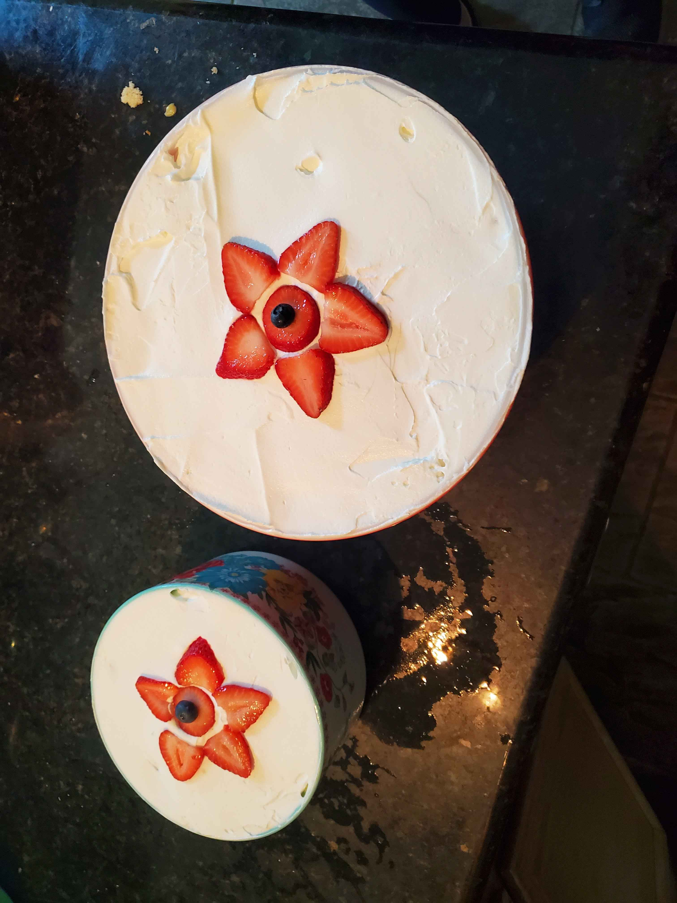
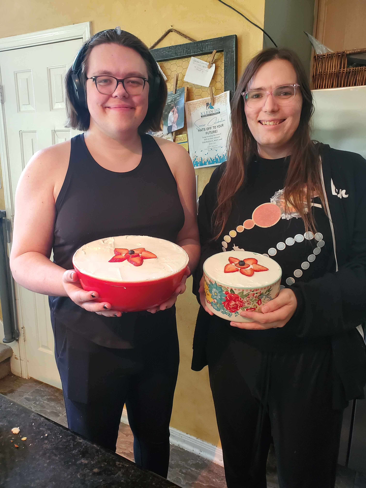
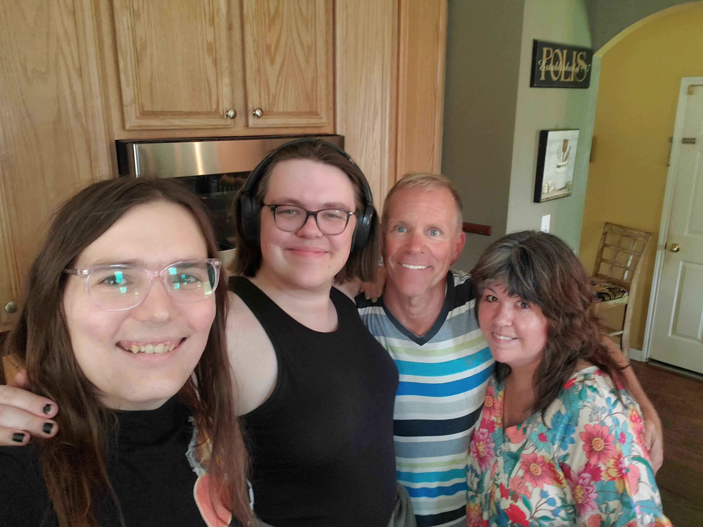

Sunday we visited Rose's family for fathers day shortly before visiting Jack and playing a super-villain roleplaying game set at Pride Parade. (I played the Woker)
Rose's mom taught us how to make gravy and potatoes, a food Rose really likes, and also some dessert thing I forget the name of.



I honestly don't have much to say about it, but I did want to post the pictures.